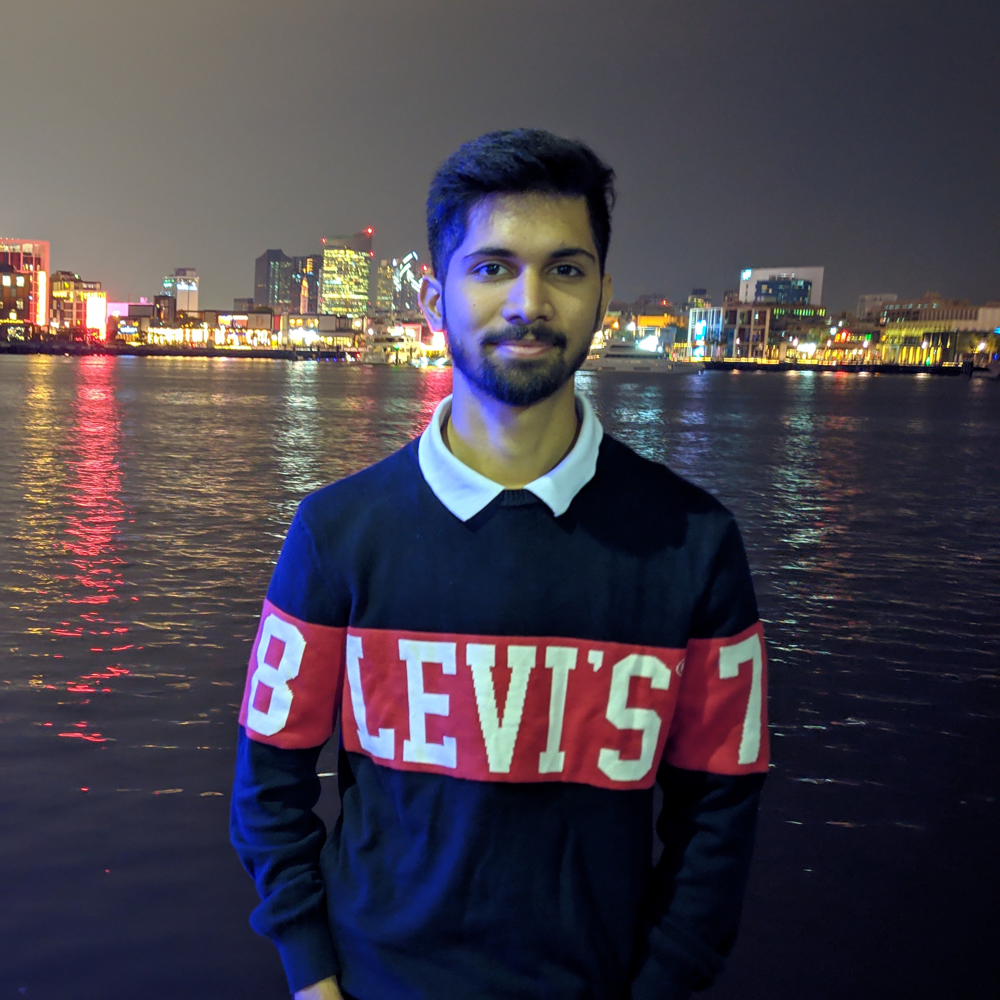

Abhishek Keri

My Journey
Hello, my name is Abhishek Keri, and I am currently a student at the
University of Nebraska at Omaha. I was born in Hyderabad, India and
completed my undergrad in Civil Engineering getting a first class
with distinction award. However, I attended a course on design
thinking and that’s when my perspective changed, and I got more into
design and web development. Consequently, I was hired after my
undergrad as a front-end engineer where I got to learn a lot. That
is when I decided to move up the corporate ladder by getting a
master’s degree in a more relevant field. Thus, I am currently
pursuing my master’s in Management Information Systems at UNO.
Apart from my professional interests, I love to dance. But don’t get
me wrong, I don’t mean professional dance, but more like dancing as
a hobby. I also love formula 1 and I am huge fan of Charles Leclerc
(Forza Ferrari!). I would consider myself sociable. The most
important thing about me is that I am a morning person, I can get
things done if I wake up early.
I have lived in India for 22 years and this is my first year in the
United States of America and I hope I have a great time learning and
exploring!!
Thank you for visiting my page.
Singing off,
Abhishek Keri
